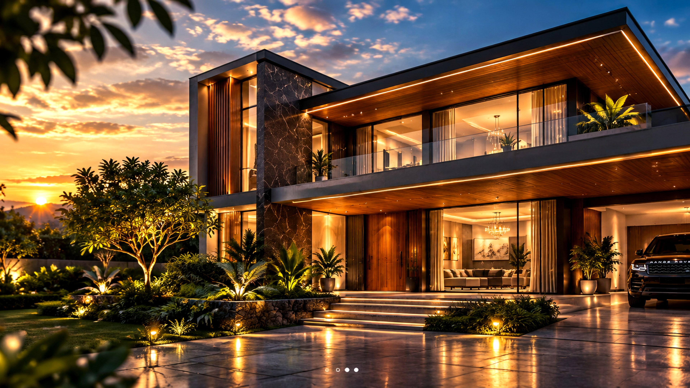

How to plan a home project without surprises.
A practical framework for getting your brief, budget and decisions organized before the work begins.

1. Start with the brief
Write down the spaces you need, how you want them to feel, the people who will use them and the things you cannot compromise on. This gives the design team a clear starting point.
2. Separate the budget
Think beyond the headline construction number. Consider professional fees, approvals, interiors, appliances, external works and a sensible contingency. A clear budget helps decisions happen earlier.
3. Decide what matters most
Not every room or finish needs the same level of investment. Identify the areas that should receive the most attention and let that priority guide the design.
4. Keep decisions organized
Use milestones for drawings, materials, finishes, procurement and site work. When decisions are made at the right time, changes become easier to manage and the project moves with more confidence.